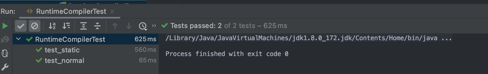

JavaCompiler动态编译java代码
自定义compiler
核心代码是JavaCompiler.CompilationTask， 通过调用JavaCompiler.CompilationTask.call方法
编译无误返回true，反之返回false
参数：out - 用于来自编译器的其他输出的 Writer；如果为 null，则使用 System.err
fileManager - 文件管理器；如果为 null，则使用编译器的标准文件管理器标准文件管理器有两个用途：
• 自定义编译器如何读写文件的基本构建块
• 在多个编译任务之间共享
diagnosticListener - 诊断侦听器；如果为 null，则使用编译器的默认方法报告诊断信息
options - 编译器选项； null 表示没有选项
classes - 类名称（用于注释处理）， null 表示没有类名称
compilationUnits - 要编译的编译单元； null 表示没有编译单元
此处我们自定了fileManager，用于接收String类型输入。编译单元是单个的String流
package io.github.kennethfan.compiler;
import javax.tools.*;
import java.util.ArrayList;
import java.util.List;
import java.util.Locale;
/**
* Created by kenneth on 2023/5/28.
*/
public class RuntimeCompiler {
private JavaCompiler javaCompiler;
public RuntimeCompiler() {
this.javaCompiler = ToolProvider.getSystemJavaCompiler();
}
public Class<?> compileAndLoad(String fullName, String sourceCode) throws ClassNotFoundException {
DiagnosticCollector<? super JavaFileObject> diagnosticCollector = new DiagnosticCollector<>();
JavaFileManager javaFileManager = new ClassFileManager(this.javaCompiler.getStandardFileManager(diagnosticCollector, null, null));
List<JavaFileObject> javaFileObjectList = new ArrayList<>();
javaFileObjectList.add(new JavaSourceObject(fullName, sourceCode));
JavaCompiler.CompilationTask task = this.javaCompiler.getTask(null, javaFileManager, diagnosticCollector, null, null, javaFileObjectList);
if (task.call()) {
return javaFileManager.getClassLoader(null).loadClass(fullName);
}
System.out.println(diagnosticCollector.getDiagnostics().get(0).getLineNumber());
System.out.println(diagnosticCollector.getDiagnostics().get(0).getColumnNumber());
System.out.println(diagnosticCollector.getDiagnostics().get(0).getMessage(Locale.ENGLISH));
System.out.println(diagnosticCollector.getDiagnostics().get(0).getSource());
System.out.println(diagnosticCollector.getDiagnostics().get(0).getCode());
return Class.forName(fullName);
}
}
自定义源文件处理
自定义源文件处理，核心方法是getCharContent，返回源码内容，kind=SOURCE
package io.github.kennethfan.compiler;
import javax.tools.SimpleJavaFileObject;
import java.io.IOException;
import java.net.URI;
/**
* Created by kenneth on 2023/5/28.
*/
class JavaSourceObject extends SimpleJavaFileObject {
/**
* 类名
*/
private final String className;
/**
* 源代码
*/
private final String sourceCode;
public JavaSourceObject(String className, String sourceCode) {
super(URI.create("String:///" + className.replaceAll("\\.", ".") + Kind.SOURCE.extension), Kind.SOURCE);
this.className = className;
this.sourceCode = sourceCode;
}
@Override
public CharSequence getCharContent(boolean ignoreEncodingErrors) throws IOException {
return this.sourceCode;
}
public String getClassName() {
return className;
}
}
自定义输出文件处理
接下来自定义编译class文件处理，
class JavaClassObject extends SimpleJavaFileObject {
private final String className;
private final ByteArrayOutputStream byteArrayOutputStream;
public JavaClassObject(String className) {
super(URI.create("String:///" + className.replaceAll("\\.", "/") + Kind.CLASS.extension), Kind.CLASS);
this.className = className;
this.byteArrayOutputStream = new ByteArrayOutputStream();
}
@Override
public OutputStream openOutputStream() throws IOException {
return this.byteArrayOutputStream;
}
public String getClassName() {
return className;
}
public byte[] getBytes() {
return this.byteArrayOutputStream.toByteArray();
}
}
自定义JavaFileManager
接下来实现JavaFileManager，此处继承ForwardingJavaFileManager
package io.github.kennethfan.compiler;
import javax.tools.FileObject;
import javax.tools.ForwardingJavaFileManager;
import javax.tools.JavaFileManager;
import javax.tools.JavaFileObject;
import java.io.IOException;
import java.security.SecureClassLoader;
/**
* Created by kenneth on 2023/5/28.
*/
public class ClassFileManager extends ForwardingJavaFileManager<JavaFileManager> {
private JavaClassObject javaClassObject;
public ClassFileManager(JavaFileManager fileManager) {
super(fileManager);
}
@Override
public ClassLoader getClassLoader(Location location) {
return new SecureClassLoader() {
@Override
protected Class<?> findClass(String name) throws ClassNotFoundException {
byte[] bytes = javaClassObject.getBytes();
return super.defineClass(name, bytes, 0, bytes.length);
}
};
}
@Override
public JavaFileObject getJavaFileForOutput(Location location, String className, JavaFileObject.Kind kind, FileObject sibling) throws IOException {
this.javaClassObject = new JavaClassObject(className);
return this.javaClassObject;
}
}
测试
import io.github.kennethfan.compiler.RuntimeCompiler;
import org.junit.Assert;
import org.junit.Test;
import java.lang.reflect.InvocationTargetException;
import java.lang.reflect.Method;
public class RuntimeCompilerTest {
@Test
public void test_static() throws ClassNotFoundException, InvocationTargetException, IllegalAccessException, NoSuchMethodException {
String classStream = "public class TestClass {\n" +
"\n" +
" public int add(int a, int b) {\n" +
" return a + b;\n" +
" }\n" +
"\n" +
" public static double pow(double a, double b) {\n" +
" return Math.pow(a, b);\n" +
" }\n" +
"}\n";
Class<?> clazz = new RuntimeCompiler().compileAndLoad("TestClass", classStream);
Method staticMethod = clazz.getMethod("pow", double.class, double.class);
double a = 2.0d;
double b = 3.0d;
Assert.assertEquals(8.0d, staticMethod.invoke(null, a, b));
}
@Test
public void test_normal() throws ClassNotFoundException, InvocationTargetException, IllegalAccessException, NoSuchMethodException, InstantiationException {
String classStream = "public class TestClass {\n" +
"\n" +
" public int add(int a, int b) {\n" +
" return a + b;\n" +
" }\n" +
"\n" +
" public static double pow(double a, double b) {\n" +
" return Math.pow(a, b);\n" +
" }\n" +
"}\n";
Class<?> clazz = new RuntimeCompiler().compileAndLoad("TestClass", classStream);
Method staticMethod = clazz.getMethod("add", int.class, int.class);
Assert.assertEquals(8, staticMethod.invoke(clazz.newInstance(), 5, 3));
}
}
